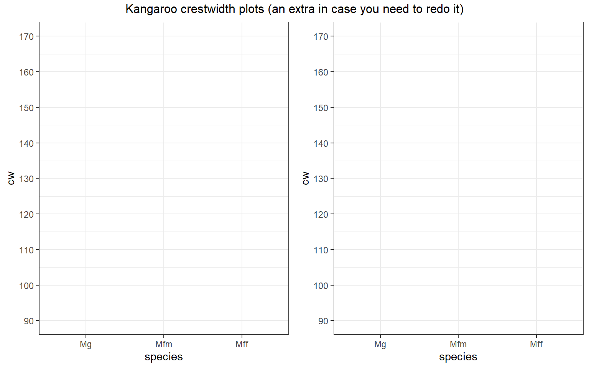

ADA2: Class 11, Chs 05 and 07, writing and plotting model equations
[Advanced Data Analysis 2](https://StatAcumen.com/teach/ada12, Stat 428/528, Spring 2023, Prof. Erik Erhardt, UNM
Author
Your Name
Published
December 16, 2022
This assignment is to be printed and hand-written.
In my opinion, some of the most important skills in modeling are:
writing down a model using indicator variables,
interpretting model coefficients,
solving for the predicted value for any combination of predictors, and
plotting the fitted model.
This assignment applies these skills to two-way factor models (ADA2 Chapter 5) and ANCOVA models with one factor and one continuous predictor (ADA2 Chapter 7).
kang <-read_csv("ADA2_CL_09_kang.csv" , na =c("", ".") ) %>%# subset only our columns of interestselect( sex, species, cw ) %>%# make dose a factor variable and label the levelsmutate(sex =factor(sex , labels =c("M","F")) , species =factor(species, labels =c("Mg", "Mfm", "Mff")) )
Rows: 148 Columns: 11
── Column specification ────────────────────────────────────────────────────────
Delimiter: ","
dbl (11): sex, species, pow, rw, sopd, cw, ifl, ml, mw, md, arh
ℹ Use `spec()` to retrieve the full column specification for this data.
ℹ Specify the column types or set `show_col_types = FALSE` to quiet this message.
lm_cw_x_s <-lm( cw ~ sex + species , data = kang )# parameter estimate tablesummary(lm_cw_x_s)
Call:
lm(formula = cw ~ sex + species, data = kang)
Residuals:
Min 1Q Median 3Q Max
-94.456 -19.746 1.553 23.478 90.216
Coefficients:
Estimate Std. Error t value Pr(>|t|)
(Intercept) 97.784 6.039 16.193 < 2e-16 ***
sexF 24.673 6.070 4.064 7.89e-05 ***
speciesMfm 4.991 7.460 0.669 0.505
speciesMff 34.280 7.383 4.643 7.66e-06 ***
---
Signif. codes: 0 '***' 0.001 '**' 0.01 '*' 0.05 '.' 0.1 ' ' 1
Residual standard error: 36.91 on 144 degrees of freedom
Multiple R-squared: 0.2229, Adjusted R-squared: 0.2067
F-statistic: 13.77 on 3 and 144 DF, p-value: 6.057e-08
(3 p) Write the fitted model equation.
Use the parameter estimate table above to write out the fitted model equation. Use indicator function notation for categorical variables. First determine what each sex and species number is. The equation looks like: \(\hat{y} = [\text{terms}]\).
Solution
(2 p) Separate model equations.
For each combination of species and sex, write the model.
Solution
Sex
Species
Fitted Model
M
Mg
\(\hat{y}=\)
\
M
Mfm
\(\hat{y}=\)
\
M
Mff
\(\hat{y}=\)
\
F
Mg
\(\hat{y}=\)
\
F
Mfm
\(\hat{y}=\)
\
F
Mff
\(\hat{y}=\)
(0 p) Plot the observed and fitted values.
Use symbols/colors/labels to distinguish between the observed and predicted values and clearly identify the species/sex combinations. Use the minimum about of labeling to make it clear.
Solution
COVID-19 Year, no hand plotting :(

2. ANCOVA model: Faculty political tolerances
A political scientist developed a questionnaire to determine political tolerance scores for a random sample of faculty members at her university. She wanted to compare mean scores adjusted for the age for each of the three categories: full professors (coded 1), associate professors (coded 2), and assistant professors (coded 3). The data are given below. Note the higher the score, the more tolerant the individual.
Below we will fit and interpret a model to assess the dependence of tolerance score on age and rank. (We will assess model fit in a later assignment.)
tolerate <-read_csv("ADA2_CL_12_tolerate.csv") %>%mutate(rank =factor(rank)# set "3" as baseline level , rank =relevel(rank, "3") )
Rows: 30 Columns: 3
── Column specification ────────────────────────────────────────────────────────
Delimiter: ","
dbl (3): score, age, rank
ℹ Use `spec()` to retrieve the full column specification for this data.
ℹ Specify the column types or set `show_col_types = FALSE` to quiet this message.
lm_s_a_r_ar <-lm( score ~ age * rank , data = tolerate )summary(lm_s_a_r_ar)
Call:
lm(formula = score ~ age * rank, data = tolerate)
Residuals:
Min 1Q Median 3Q Max
-1.34746 -0.28793 0.01405 0.36653 1.07669
Coefficients:
Estimate Std. Error t value Pr(>|t|)
(Intercept) 5.42706 0.98483 5.511 1.15e-05 ***
age -0.01321 0.02948 -0.448 0.6580
rank1 2.78490 1.51591 1.837 0.0786 .
rank2 -1.22343 1.50993 -0.810 0.4258
age:rank1 -0.07247 0.03779 -1.918 0.0671 .
age:rank2 0.03022 0.04165 0.726 0.4751
---
Signif. codes: 0 '***' 0.001 '**' 0.01 '*' 0.05 '.' 0.1 ' ' 1
Residual standard error: 0.6378 on 24 degrees of freedom
Multiple R-squared: 0.5112, Adjusted R-squared: 0.4093
F-statistic: 5.02 on 5 and 24 DF, p-value: 0.002748
Use the parameter estimate table above to write out the fitted model equation. Use indicator function notation for categorical variables. The equation looks like: \(\hat{y} = [\text{terms}]\).
Solution
(2 p) Separate model equations.
There’s a separate regression line for each faculty rank.
Solution
Rank
Fitted Model
1
\(\hat{y}=\)
\
2
\(\hat{y}=\)
\
3
\(\hat{y}=\)
(0 p) Plot the fitted regression lines.
Use symbols/colors/labels to distinguish between the observed and predicted values and clearly identify the rank. Use the minimum about of labeling to make it clear. I recommend plotting each line by evaluating two points then connecting them, for example, by evaluating at age=0 and age=50.